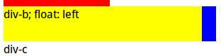
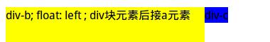

CSS 中float属性使得html的任何元素都是可以脱离原来html文档流而左右移动；默认有四个属性值：left, right,none,inherit四种值。
比如 float:left 表示向左浮动，比如多个div（块级元素）在一个页面上，默认html情况下布局情况是：一行一个div，从左到右。但是只要在div的css中使用float：left，这些div元素不属于html文档流的一部分，是悬浮在html元素上面。所以如果一个html元素浮动到父级容器左边边界，左边下面还有html元素那么将被浮动元素覆盖。如下图所示：因为黄色div是浮动的，覆盖了蓝色的div块，只是存在未覆盖的一点。

（图一）
div块元素后接a元素

（图二）
使用float属性可以使一行有多个div，这样可以把网页划分成很多块，但是使用该属性会影响后面的元素，所有如果后面的div不想再被影响，可以使用clear:both；可以理解为清除float:left和float:right的影响，返回到默认状态
关于float属性用于html元素结论
| 当前元素分类(设置了float:left) | 下一个紧邻元素分类(不设置float) | 结论 |
| 块级元素(a) | 块级元素(b) | b会填充a遗留下来的空间，a会和b发生重叠，a的图层在上面。（图一） |
| 内联元素(b) | b会紧跟在a的后面。并根据自身内联元素的特点，是否换行。（图二） | |
| 内联元素(a) | 块级元素(b) | b不会跟随a的移动。 |
| 内联元素(b) | b会紧跟在a的后面。并根据自身内联元素的特点，是否换行。 |
最后一句话对于可以浮动的元素最好用div块级元素包裹以设定好浮动的区域，以免影响其他元素。